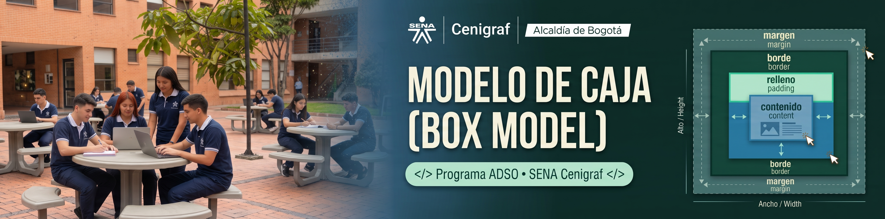
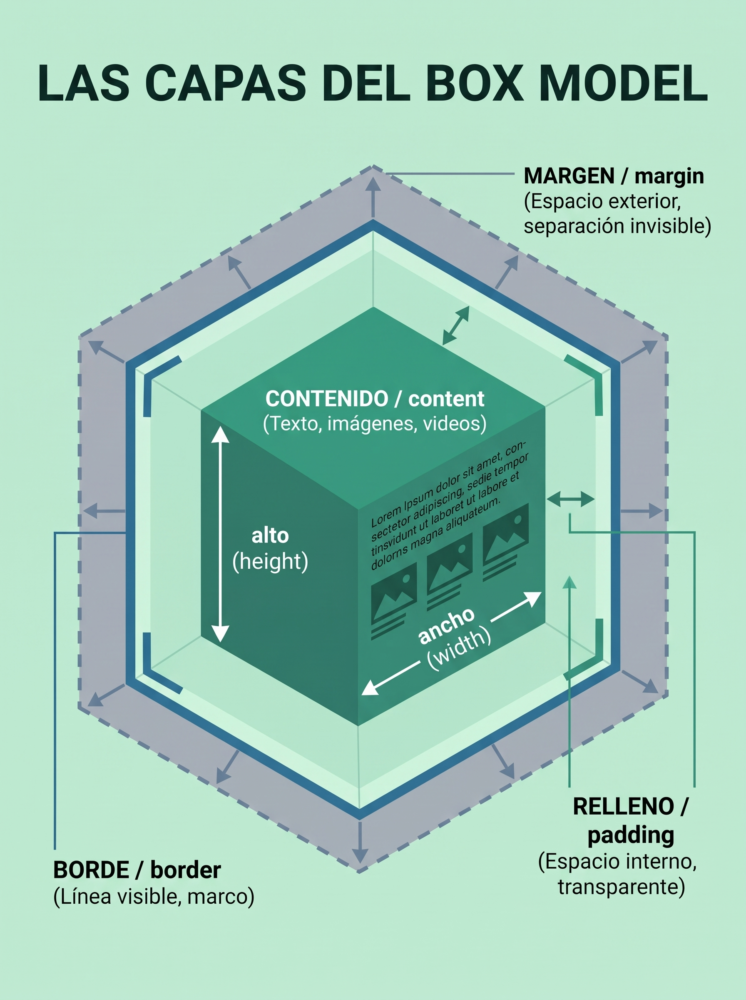
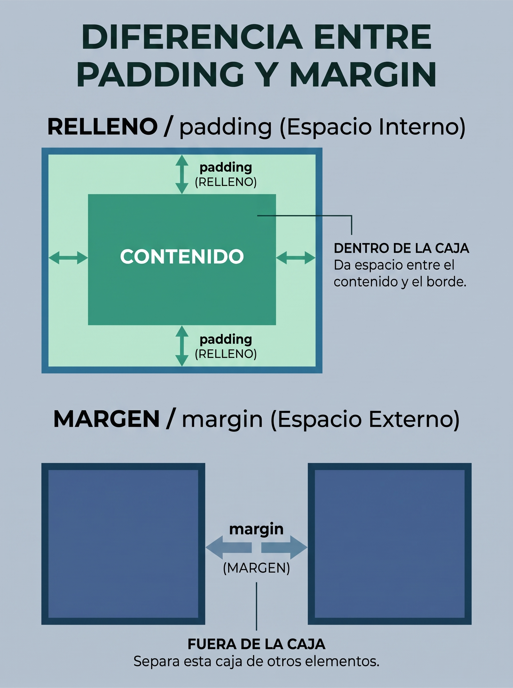

Para el navegador, cada elemento de una página web (un título, una imagen, un botón o un contenedor) se comporta como una caja rectangular.
El Box Model es el sistema de cuatro capas que envuelve a ese elemento y determina cuánto espacio ocupa y cómo se relaciona con las demás cajas de la pantalla.

Es el núcleo de la caja, el espacio real donde aparece el texto, la imagen o el video.
Su tamaño se controla mediante las propiedades width (ancho) y height
(alto).
Es el espacio transparente entre el contenido y el borde.
Sirve para darle aire por dentro a los elementos (por ejemplo, que el texto de un botón no quede pegado a sus orillas) y sí adopta el color de fondo de la caja.

Borde (border): Es la línea visible que rodea el relleno y el
contenido; se le puede configurar grosor, estilo (sólido, punteado, doble) y color.
Margen (margin): Es la capa más externa e invisible. No tiene color de
fondo y su función es empujar y separar la caja respecto a los elementos vecinos.
Puedes ahorrar líneas escribiendo márgenes o rellenos en una sola propiedad abreviada
(margin o padding).
Cuando se escriben cuatro valores seguidos, CSS siempre los lee en el sentido de las agujas del reloj: Arriba → Derecha → Abajo → Izquierda. Si se ponen dos valores, el primero aplica arriba/abajo y el segundo a los lados.
box-sizing)Por defecto (content-box), si una caja mide 300px y le agregas
20px de relleno a cada lado, termina midiendo 340px y puede desacomodar tu
diseño.
La solución profesional es usar box-sizing: border-box;, que obliga al navegador a
incluir el relleno y el borde dentro de los 300px originales sin agrandar la caja.
Centrado automático: Puedes centrar horizontalmente un bloque con ancho definido
asignando margen automático (margin: 0 auto;) a izquierda y derecha.
Colapso vertical: Cuando dos cajas están una encima de la otra, sus márgenes verticales no se suman, sino que prevalece únicamente el margen más grande de los dos.
De adentro hacia afuera, la jerarquía siempre sigue el orden: Contenido → Padding → Border → Margin.
Consejo práctico: Al presionar F12 (Inspeccionar) en cualquier navegador, aparece el diagrama interactivo del Box Model mostrando en tiempo real los píxeles exactos de cada capa.